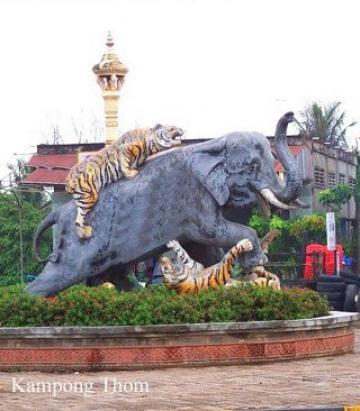

.jpg)
- Siem Reap
- Pailin
- Battambang
- Pursat
- Banteay Meanchey
- Oddar Meanchey
- Preah Vihear
- Kampong Thom
- Kampong Chhnang
- Kampongcham
- Stung Treng
- Ratanakiri
- Mondulkiri
- Kratie
- Tbongkhmum
- Preyveng
- Svay Rieng
- Kandal
- Phnom Penh
- Takeo
- Kampong Speu
- Kampot
- Kep
- Preah Sihanouk
- koh kong


Kampong Thom Travel Guides
General Information
Kampong Thom is Cambodia's second largest province by area. Its capital is named Kampong Thom, a picturesque town on the banks of the Stung Saen River.The Sambor temple and Prei Kuk temple are the two main temples in Kompong Thom as well as other less significant Angkorian sites. Kompong Thom was a very powerful capital in Southeast Asia during the Funan period. Later on, during the French rule, the province was home to a large group named the Stieng, but they have long been assimilated into Khmer society.Kampong Pos Thom was the original name of the present called Kampong Thom. Because originally long time ago, at the dock of the Sen River next to a big natural lake, there was a big cave with a pair of big snakes inside. The people living around this area usually saw these big snakes every Buddhist Holiday.
Time after that, the snakes disappeared, and the people of that area called it Kampong Pos Thom. Then, only short words Kampong Thom. During the French colony in Cambodia, the French ruled and divided Cambodian territory into provinces, and named them according to the spoken words of the people Kampong Thom Province.The provincial capital Kampong Thom is another bustling town on the banks of the Stung Sen River. The town itself is strategically located on the National Highway No 6 between Phnom Penh and Siem Reap. Its more a stopover to have a break from driving long distances or to eat something on the way to Siem Reap or Phnom Penh, than a very touristic place. Despite the town itself people come to explore the pre-Angkorian Chenla capital Sambor Prei Kuk, the remote temples of Preah Khan and Prasat Preah Vihear.
Geography
Kampong Thom is a province located at the central point of the Kingdom of Cambodia. The province has a total land area of 15,061square kilometres divided into 8 districts, 81 communes and 737 villages. The province borders in the North with Preah Vihear and Siem Reap, to the East with Kratie, to the South with Kampong Cham and to the West with Kampong Chhnang.
The province is divided into two parts:
- Eastern part of National Road 6: Covers 70% surface consisting of forests and plateaus, which are rich in natural resources for a good and profitable agriculture, forestry and animal husbandry.
- Western part of National Road 6: Covers 30% surface consisting of plain area extending to the famous Tonle Sap Lake. This area is one of the best areas in Cambodia for rice cultivation and fishing to support the needs of the province and to additionaly export them to other areas or Countries. Two of the three core areas in Tonle Sap Biosphere Reserve are located in Kampong Thom: Boeng Chhmar (14,560 hectares), and Stung Saen (6,355 hectares).
Population
The total population of Kampong Thom is 708,398 person or 4.5% of the total population (14,363,519 person in Cambodia, 2007, provincial government data) with a growth rate of 2.4%, which is consisting of 343,478 person or 48.3% who are male and 364,920 person or 51.7% who are female. The above number also consists of 517,072 person or 85.0% who are farmers, 28,150 person or 4.60% who are fishermen, 91,248 person or 15% who are traders, 5,884 person or 0.97% who are government's officers.
Climate
The country has a tropical climate warm and humid. In the monsoon season, abundant rain allows for the cultivation of a wide variety of crops. This year-round tropical climate makes Cambodia ideal for developing tourism. Travellers need not to fear natural disasters such as erupting volcanoes or earthquakes, and the country is not directly affected by tropical storms.
Climate: Cambodia can be visited throughout the year. However, those plans to travel extensively by road should be avoided the last two months of the rainy season when some countryside roads may be impassable. The average temperature is about 27 degrees Celsius; the minimum temperature is about 16 degrees. December and January are the coolest months, whereas the hottest is April.
General information about the provincial climate:
- Cool season: November- March (20-28c)
- Hot season: March- May (30c -35c)
- Rainy season: May - October (23-30c, with humidity up to 90%.) At this time of year it rarely rains in the morning: most precipitation come in the afternoon, and even then, only sporadically. Rainfall varies considerably from area to area, whereas the seaward slopes of the Southwest highlands (Kompong Som and Kampot provinces) receive more than 5,000 mm of rain per annum, the central lowlands average only about 1,400 mm.
Economy
Kampong Thom is also a province, rich in tourism potentials to attract national and international tourists such as the exotic lakes, rivers, forests, mountains and more than 200 ancient temples. Much of Kampong Thom is located on the floodplain of Lake Tonle Sap. In 2003-04 it was a significant harvester of wild fish (18,800 tons) and the fourth largest producer of fish through aquaculture in Cambodia (1,800 tons). Most fish-raising is home production, with a growing segment devoted to rice field aquaculture.
Kampong Thom is also one of the largest producers of cashew nuts in Cambodia, with 6,371 hectares under production. The Riel is the local currency. However, the US Dollar is accepted (4,000 Riel to one U.S.D, July 05) and it is best to carry small denominations. Credit cards, Traveler's Cheques and foreign currencies are accepted in major hotels, souvenir shops and banks. Newly installed Credit Card Teller distribution machines are now available in Siem Reap and Phnom Penh.